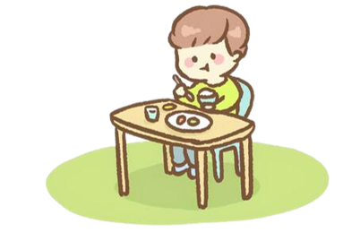
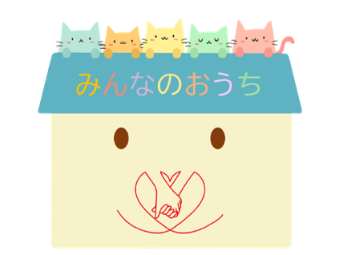

みんなのおうちの存在意義

▮日本の子どもの貧困の現状
みなさんは日本の子どもの貧困状況をご存じですか？
現在日本の子どもの貧困率は(2018年)は13.5％で約７人に1人が貧困の状態にあると言われています。
さらにひとり親家庭では48.1％で約2人に1人が貧困の状態にあると言われています。
このような現状は先進国の中では最悪な水準と言われています。
▮日本の孤食の現状
みなさんは孤食をご存じですか？
孤食とは、文字通り孤立した状態で行う食事のことです。
※総務省「社会生活基本調査」(2011)より作成
ある調査によると、平日の子どもの夕食の孤食率は小学生で1.6％、中学生で3.7％と一見少なく感じ取れるようにも思えるが、児童・生徒数に掛けると、小学生では約10万人、中学生では約12万人と合わせて全国で約22万人の子どもがひとりで夕食を過ごしているという現状が見られます。
孤食が多いのは子どもだけ？
勿論そんなはずはありません。

60～84歳の高齢者を対象にした、ある調査によると、男性では11.6％が、女性では19.6％が毎日孤食の状態にあるという現状があります。
独身や、離婚、他界など、様々な理由により、1人で食べざる負えない状況にある人がこんなにもいるのです。
▮そこで私たちが目指す「みんなのおうち」とは？
私たちが目指すのは、性別は勿論のこと、年齢、国籍、経歴などすべての壁をなくし、誰もが気軽に集まって誰かと食卓を囲む時間をつくることのできる「みんなのおうち」です！
貧困等で、十分な量を思うように食べることができていない子どもは勿論のこと、様々な事情で孤食が多くなってしまっている現在、大人の方にも少しでも誰かと食卓を囲む時間をつくってもらいたいという思いがあります！
普段一人で食事の時間を過ごしてしまう場合は、なかなか誰かとのコミュニケーションは生まれませんが、近くに誰かと食卓を囲むことのできる場所があり、コミュニケーションの機会が増えれば、1人でご飯の時間を過ごすよりも、きっと何か幸せがあるはずです！
